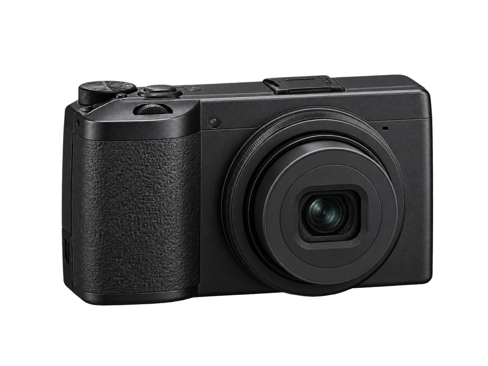

连接相机
通过蓝牙与相机 Wi-Fi 建立连接。分阶段提示连接状态，也支持手动接入无线网络。
RICOH GR III
遥控拍摄、照片传输与本地创作。
在手机上查看取景、调整参数，保存相机照片。
支持 LUT、画框与 JPEG 副本导出。
Android 8.0+ · arm64 iOS TestFlight 准备中

功能介绍
通过蓝牙与相机 Wi-Fi 建立连接。分阶段提示连接状态，也支持手动接入无线网络。
查看实时取景、调整参数。对焦与快门独立操作。
浏览相机图库，选择 JPG、RAW 或 RAW+JPG 保存。查看传输进度，失败后可以重试。
导入 .cube LUT，添加画框与文字。导出 JPEG 副本，不覆盖原图。
暗房
从本机图库选图，应用内置或导入的 LUT，调整画框和文字。
照片在本机处理，无需注册账号。
使用方法
在相机上开启蓝牙与无线 LAN，在 GRemote 中搜索并连接。也可以先在手机系统设置中接入相机 Wi-Fi，再返回应用。
打开联机拍摄，查看取景并调整参数；按需对焦后，单独点击快门。进入相机图库，选择照片并保存到手机。
从本机图库选图，应用色彩风格，添加画框与文字。确认效果后导出新的 JPEG 副本，再分享你的作品。
相机连接需要附近设备 / 蓝牙权限，部分 Android 版本需要位置权限以扫描 Wi-Fi。浏览和保存照片需要相册相关权限。“位置记录”是单独的可选功能，仅在联机拍摄且应用处于前台时定位。
相机 Wi-Fi 用于手机与相机直接通信，本身不提供互联网。请保持连接，返回 GRemote；若系统询问是否继续使用此网络，请选择保持连接。下载应用和查看在线文档可在连接相机前完成。
当前发布为 Android 8.0+、arm64 版本，主要适配 RICOH GR III。已有小米 14 / GR III 固件 2.10 的部分连接与传输记录，其他设备、长期稳定性及完整创作流程仍需真机验收。iOS 正在准备 TestFlight，尚未开放下载。
v1.0.1 使用项目专用正式签名，与旧版 v1.0.0 不同，不能直接覆盖升级；卸载会有丢失本地数据的风险，请先导出需要保留的作品。安装前可通过发布页的 SHA-256 文件校验下载。
版本更新
验证范围随版本公开记录。构建与自动化测试通过，不等同于所有设备均已完成真机验收。